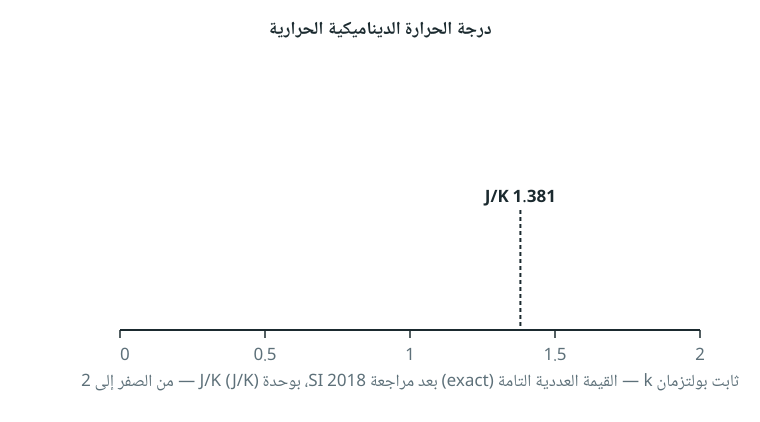

درجة الحرارة الديناميكية الحرارية
Thermodynamic Temperature
مقدار أساسي في النظام الدولي للوحدات، رمزه T، ووحدته الكلفن. يبدأ من الصفر المطلق ويُعرَّف عبر ثابت بولتزمان.
درجة الحرارة الديناميكية الحرارية مقدار أساسي في النظام الدولي للوحدات، رمزه T، ووحدته الكلفن ورمزها K. ترد في جدول الوحدات الأساسية لدى المكتب الدولي للأوزان والمقاييس ضمن سبعة مقادير أساسية. بعد مراجعة 2018 للنظام الدولي صارت وحدة الكلفن تُعرَّف بتثبيت القيمة العددية لثابت بولتزمان k عند 1.380 649×10⁻²³ معبَّراً عنها بوحدة J/K. تنبيه مهم: المكتب الدولي يعرّف الوحدة (الكلفن) لا المقدار نفسه؛ وتعريف المقدار في ISO 80000-5:2019 لم يُقرأ في هذه الجلسة ولا يُنسب إليه نص.
كيف تعمل الظاهرة؟
درجة الحرارة الديناميكية الحرارية مقدار أساسي لا يُشتق من غيره، وتُقاس عملياً بثرمومترات معايَرة على نقاط مرجعية محددة. بعد مراجعة النظام الدولي 2018 لم تعد الكلفن تُعرَّف بنقطة ثلاثية للماء، بل بتثبيت القيمة العددية لثابت بولتزمان، فصار المقدار مرتبطاً مباشرة بمقياس الطاقة الحرارية kT لكل درجة من الحرية.
العلاقة بالأرقام
ثابت بولتزمان k = 1.380 649×10⁻²³ J/K قيمة تامة (exact) بعد مراجعة 2018، أي بلا عدم يقين. والعلاقة بين المقياسين t/°م = T/K − 273.15. والطاقة الحرارية المتوسطة لكل درجة حرية تساوي ½kT، فعند 300 K تكون نحو 2.07×10⁻²¹ J. والصفر المطلق 0 K يعادل −273.15 °م.
مفاهيم متقاربة
تختلف عن الدرجة المئوية في المنشأ لا في المقدار: الفرق بينهما ثابت مقداره 273.15، فدرجة مئوية واحدة تساوي كلفناً واحداً كفرق. وتختلف عن الحرارة اختلافاً جوهرياً: درجة الحرارة خاصية مكثفة تصف حالة الجسم، والحرارة طاقة تنتقل بين جسمين. ولا تُخلط بالطاقة الداخلية التي تقيس مجموع طاقات الجزيئات وتقاس بالجول.
حدود التطبيق
المكتب الدولي للأوزان والمقاييس يعرّف الوحدة (الكلفن) لا المقدار نفسه، وتعريف المقدار في ISO 80000-5:2019 لم يُقرأ في هذه الجلسة ولا يُنسب إليه نص. ولا تُعرَّف درجة الحرارة الديناميكية الحرارية للأنظمة التي لا تكون في توازن حراري داخلي، كالغازات المتخلخلة جداً أو الأنظمة الحية.

| الكمية | القيمة | المصدر |
|---|---|---|
| ثابت بولتزمان k — القيمة العددية التامة (exact) بعد مراجعة SI 2018، بوحدة J/K | 1.380 649×10⁻²³ J/K | [2] |
| سنة مراجعة النظام الدولي للوحدات التي عرّفت الكلفن بتثبيت ثابت بولتزمان | 2018 سنة | [1] |
المصادر
- 1 SI base units — kelvin — BIPM — المكتب الدولي للأوزان والمقاييس (2026). www.bipm.org/en/si-base-units/kelvin · اطُّلع عليه 2026-11-21
- 2 SI Brochure: The International System of Units, 9th ed. (2019، محدَّثة 2026) — BIPM (2026). www.bipm.org/en/si-brochure-9 · اطُّلع عليه 2026-11-21
استشهد بهذا المصطلح
الصيغتان مبنيتان من بيانات الصفحة نفسها: العنوان والتاريخ ورابط النسخة المنشورة.
درجة الحرارة الديناميكية الحرارية — Thermodynamic Temperature. (2026). ديوان المعرفة — انفراد. https://infiradev.com/diwan/terms/term-thermodynamic-temperature.html
@misc{term-thermodynamic-temperature2026,
title = {درجة الحرارة الديناميكية الحرارية},
titleaddon = {Thermodynamic Temperature},
howpublished = {{ديوان المعرفة — انفراد} — مرجع علمي عربي},
year = {2026},
url = {https://infiradev.com/diwan/terms/term-thermodynamic-temperature.html},
urldate = {2026-11-26},
note = {مراجعة علمية: hermes (مراجعة معتمدة 2026-11-26)}
}
راجعه: hermes (مراجعة معتمدة 2026-11-26) · 2026-11-26 · آخر تحديث 2026-11-21